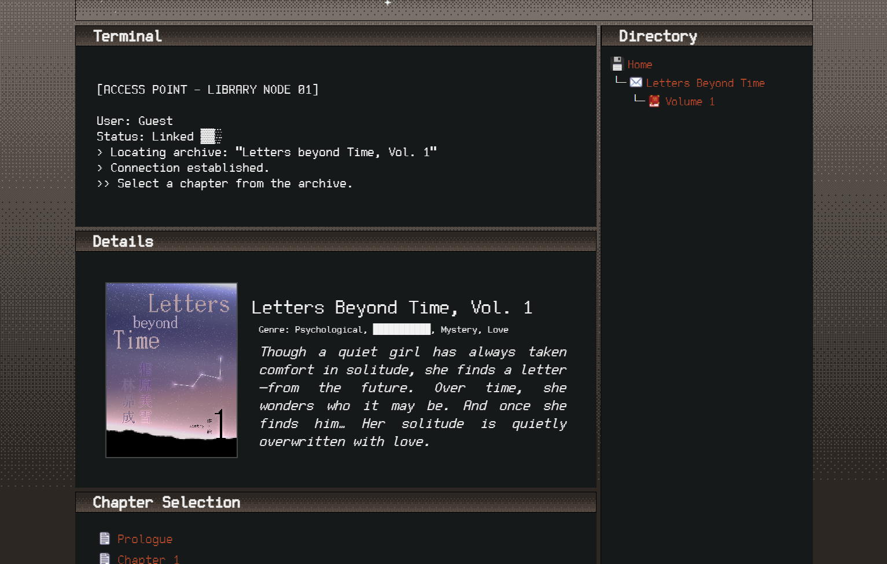
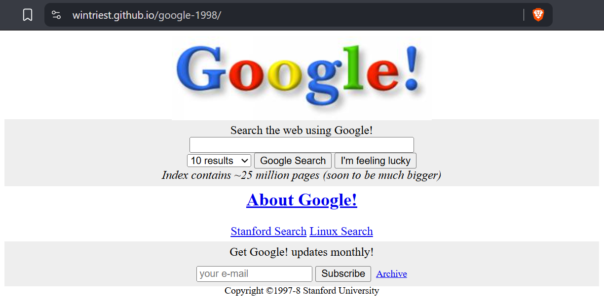
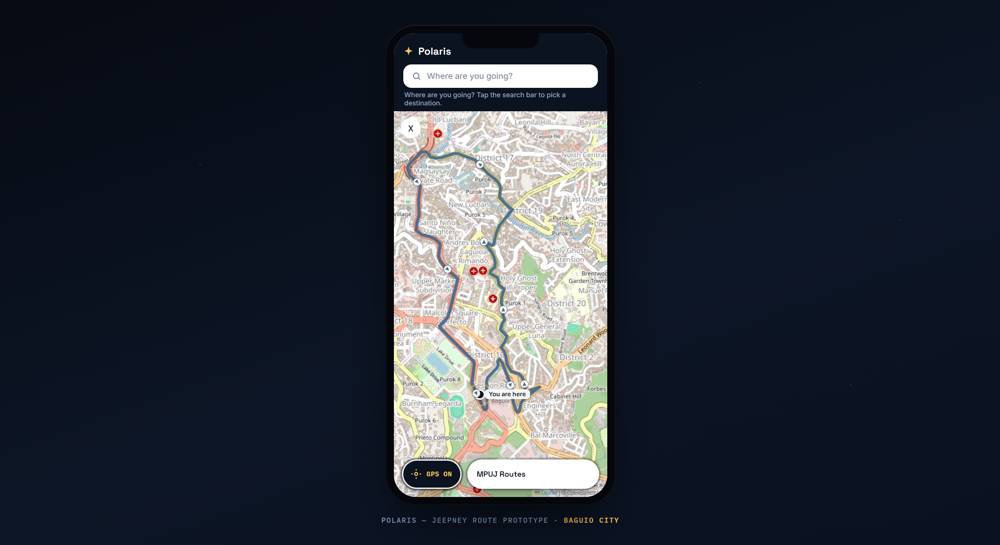

Gallery
Personal Projects
Below are some of my works, both personal and academic—utilizing my understanding of technology not just for creation but also creativity.
Gallery
Below are some of my works, both personal and academic—utilizing my understanding of technology not just for creation but also creativity.


